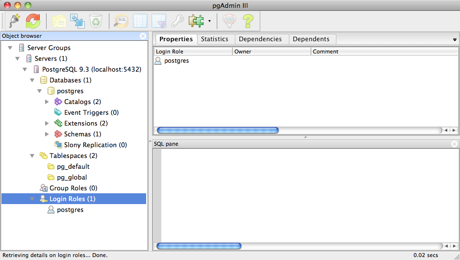
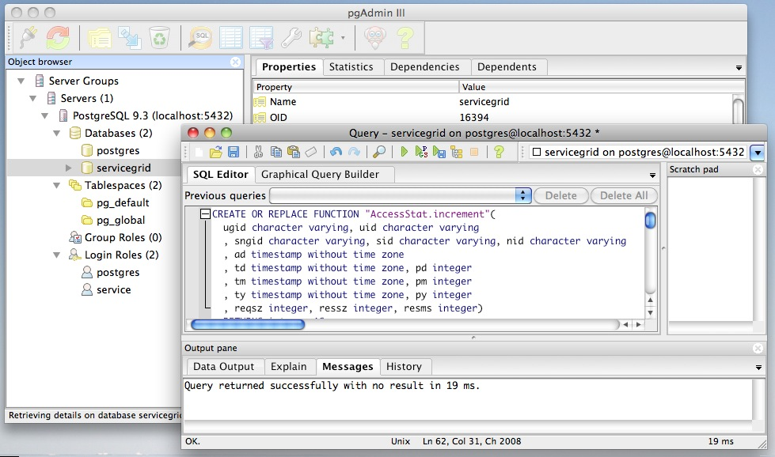

Version 3, Marc Verhagen, April 2014.
[ sources | postgres | service grid ]
This document describes how to install the service grid software from scratch on a Mac running OSX 10.6.8.
In the directory where this html file lives (and, more importantly, the
installation script), create a new directory named sources, then subdirectories
langrid, postgres and tomcat. To install
a service grid, we need Tomcat, PostgreSQL and the Service Grid code.
Tomcat Get Apache Tomcat from http://tomcat.apache.org/ (I got apache-tomcat-7.0.53.tar.gz) and put it in sources/tomcat. You also need the Apache Commons DBCP and the Apache Commons Pool to make tomcat ready for the service grid. Get commons-dbcp-1.4-bin.tar.gz from http://commons.apache.org/dbcp/download_dbcp.cgi and commons-pool-1.6-bin.tar.gz from http://commons.apache.org/pool/download_pool.cgi. Add both tosources/tomcat. All archives need to be unpacked.PostgreSQL Get the installer from http://www.postgresql.org/download/ and the database driver from http://jdbc.postgresql.org/download.html. At the time of this writing, the most recent version was postgresql-9.3.4-3-osx.zip. For the driver, I used the link "JDBC4 Postgresql Driver, Version 9.3-1101". Add the driver to sources/postgres.Service Grid Code is available at http://sourceforge.net/projects/servicegrid/files/. Click "Service Grid Server Software" and get The zip file contains a WAR file named langrid-2.0.0.war, but it is defective, instead we need to use the loose WAR file. Put the unzipped zip file and the war file in
- langrid-corenode-p2p-2.0.0-20120718.zip
- jp.go.nict.langrid.webapps.langrid-core-20130904.war
sources/langrid.
Installation is a fairly simple process, even though it is not immediately clear what happens behind the screens, I do not quite remember how I figured out what to do and the postgres documentation is at first glance not very helpful. There are two steps.
kern.sysv.shmmax=1610612736 kern.sysv.shmall=393216 kern.sysv.shmmin=1 kern.sysv.shmmni=32 kern.sysv.shmseg=8 kern.maxprocperuid=512 kern.maxproc=2048
The main goal here is to increase shared memory. After this, you need to reboot the system so the settings above take effect.
/Library/PostgreSQL/9.3 (which also has the psql command line
tool in the bin directory).
The installation includes pgAdmin III and the application stack builder, which can be used to add some extensions. With pgAdmin, creating a database for the service manager is a five-step procedure:
/Applications/PostgreSQL 9.3 and select the
PostgreSQL 9.3 Server in the Object Browser, then right-click it and select
"Connect" in order to see and connect to your databases.

source/langrid/langrid-corenode-p2p-2.0.0-20120718/postgresql/create_storedproc.sql
(or its local copy
in this manual). You can use the "Open File" button for this (second on the left
on the menu bar). Then click "Execute query" (the green right arrow on the menu
bar). You should get a message indicating success as below.

A few remarks on the above:
installdb.sh script
in sources/langrid/langrid-corenode-p2p-2.0.0-20120718/postgresql. This
script creates the login role and the database, executes "createlang plpgsql $1"
and alters a function by changing the owner. Creating the plpqsql language is
not needed for PostgreSQL 9, the others were all done in the steps above.You can now close pgAdmin and install the service manager.
We will now create a new Tomcat server that runs the Service Manager code
in tomcat-sm. We do this from scratch, assuming all sources are in
the sources directory as specified in the section on downloading
sources. The new server will use the servicegrid database owned by the service
login role. There are two
steps:
Create a file with all settings. There are a couple of pre-baked settings
available in settings-service-manager-lh.txt and
settings-service-manager-ip.txt, where the first one creates a
service manager that can be accessed through the URL http://localhost:8080 and
the second one an identical service manager except that it can be accessed by an
IP address, both access the same database. An annotated example of a settings
file is in examples/settings-service-manager.txt
Run install.py, which takes two required arguments: the settings
file and the target directory. This script makes some assumptions about the
structure of the sources directory so it is important that the downloading
instructions were followed to the letter.
% python install.py settings-service-manager-lh.txt tomcat-sm
This adds a Tomcat user named 'tomcat' with password 'tomcatpw' to the tomcat
users file. This user can manage the applications. You can define another
username and password by invoking install.py with two extra
arguments:
% python install.py settings-service-manager-lh.txt tomcat-sm USER PASSWORD
The install script also starts the Tomcat instance. You can manually start up and shut down the Tomcat instance like this:
% tomcat-sm/bin/startup.sh % tomcat-sm/bin/shutdown.sh
With Tomcat running, and assuming you ran the install script exactly as
printed above, you can access the Tomcat server on port 8080 at
http://localhost:8080. The
Service Manager is available at http://localhost:8080/service_manager. The first time you
open Tomcat or the Service Manager it may take a while because Tomcat is
creating the Service Manager application in
webapps/service_manager, using the Service Manager's .war file. If
you get an error message "Requested resource not available", then you probably
have a problem with PostgreSQL, you can confirm this in the logs directory of
the server. The problem usually is that the database name or password does not
match or that you forgot to start PostgreSQL.
The installations is done and it is safe to stop reading now. This section gives the details on what is ging on behind the screens when installing the service manager. These are older notes and at points refer to Active BPEL, which used to be installed in tandem with the service manager.
First you install Tomcat and add a few libraries that the service manager needs. Installation is a matter of unpacking the tar.gz file and putting it somewhere. See RUNNING.txt in the Tomcat distribution for more details.
% cp -R sources/tomcat/apache-tomcat-6.0.35 tomcat-sm % cp sources/commons-dbcp-1.4.jar tomcat-sm/lib/commons-dbcp-1.4.jar % cp sources/commons-pool-1.6.jar tomcat-sm/lib/commons-pool-1.6.jar % cp sources/postgresql-9.1-902.jdbc4.jar tomcat-sm/lib/postgresql-9.1-902.jdbc4.jar
I am assuming here that all the downloaded sources live in "sources" and that the tomcat archive was expanded. Note also that the script assumes some structure inside the sources directory.
One thing this script does in this step is calling a Python script that adds a tomcat user to
tomcat-base/conf/tomcat-users.xml and allows this user to run the Tomcat
Manager. By default, this user is "tomcat" and has the password "tomcat". You may want to
change the password in scripts/adjust_tomcat_users1.py.
To start and shut down tomcat do this:
% tomcat-sm/bin/startup.sh % tomcat-sm/bin/shutdown.sh
After startup, you can access the tomcat server at http://localhost:8080 (or use an IP address if you have one). When doing a process listing with Tomcat running, you should see a tomcat process which will look like this:
/System/Library/Frameworks/JavaVM.framework/Versions/CurrentJDK/Home/bin/java -Djava.util.logging.config.file=/Users/marc/Sites/tomcat-servicegrid/conf/logging.properties -Djava.util.logging.manager=org.apache.juli.ClassLoaderLogManager -Djava.endorsed.dirs=/Users/marc/Sites/tomcat-servicegrid/endorsed -classpath /Users/marc/Sites/tomcat-servicegrid/bin/bootstrap.jar -Dcatalina.base=/Users/marc/Sites/tomcat-sm -Dcatalina.home=/Users/marc/Sites/tomcat-sm -Djava.io.tmpdir=/Users/marc/Sites/tomcat-sm/temp org.apache.catalina.startup.Bootstrap start
Copy the service_manager.xml configuration file:
% mkdir tomcat-sm/conf/Catalina % mkdir tomcat-sm/conf/Catalina/localhost % setenv LANGRID_SOURCE sources/langrid/langrid-corenode-p2p-2.0.0-20120718 % cp $LANGRID_SOURCE/tomcat-langrid/conf/Catalina/localhost/langrid-2.0.xml tomcat-sm/Catalina/localhost/service_manager.xml
The setenv command is used for display purposes (without it, the path to langrid-2.0.xml does not fit on one line) and the last command is not quite correct since line breaks were added for display reasons. The first two steps are not needed if you had at some point started the tomcat server. If you had started it, it is best to shut it down before you do all this.
tomcat-sm/Catalina/localhost/service_manager.xml to insert the relevant
settings. See examples/service_manager.xml for an example. While this can be done
manually, this is a tad tedious and error prone since you will have to redo everything
every time you do this and everything means editing about 20 spots in
service_manager.xml. Instead, edit a settings file in this directory (for example
settings-service-manager.txt) and run a python script to insert the settings
into the xml file.
% mv tomcat-sm/conf/Catalina/localhost/service_manager.xml
tomcat-sm/conf/Catalina/localhost/service_manager.xml.org
% python scripts/create_service_manager_xml.py
settings-service-manager.txt
tomcat-sm/conf/Catalina/localhost/service_manager.xml.org
tomcat-sm/conf/Catalina/localhost/service_manager.xml
There are a couple of pre-baked settings files available (settings-service-manager-lh.txt
and settings-service-manager-ip.txt), where the first one creates a service manager that
can be accessed through the URL http://localhost:8080 and the second one an identical
service manager except that it can be accessed by an IP address, both access the same
database. An annotated example of a settings file is
in examples/settings-service-manager.txt
% cp sources/langrid/jp.go.nict.langrid.webapps.langrid-core-20120718-2.war
tomcat-sm/webapps/service_manager.war
(By the way, if new code is released and you want to update your Service Manager, all you
need to do is to stop Tomcat, remove tomcat-sm/webapps/service_manager and
tomcat-sm/webapps/service_manager.war, redo the step above, and restart
Tomcat. This preserves all settings in the configuration file.)
In step 3 above, I refered to the XML settings file
named service_manager.xml and an associated text
file settings-service-manager.py. By editing the latter and using the Python
script to insert the settings you avoid some annoying bookkeeping on the XML file. The
parameters that need to be set occur in both files. Basically, the text file defines
substitutions for the xml file. Below is a line from each file to illustrate this.
The parameters that are relevant for hooking up the Service Manager with Active BPEL, with variable names and actual values used, are printed below:
service_manager.xml <Parameter name="langrid.node.url" value="${NODE_URL}"/> settings-service-manager.txt ${NODE_URL} http://localhost:8080/service_manager
langrid.node.name ${NODE_URL} http://localhost:8080/service_manager appAuth.simpleApp.authKey ${AE_TO_CORE_APPAUTHKEY} ccbbaa langrid.activeBpelServicesUrl ${CORE_TO_AE_BASEURL} http://localhost:8081/active-bpel/services langrid.activeBpelAppAuthKey ${CORE_TO_AE_APPAUTHKEY} aabbcc
The first two parameters encode how the Service Manager is going to be known to the Active BPEL instances and the second two are how the Active BPEL instance will be known to the Service Manager. Note that in an earlier version of the software (20101210), ${CORE_TO_AE_BASEURL} and ${CORE_TO_AE_APPAUTHKEY} were named ${INVOKER_TO_AE_BASEURL} and ${INVOKER_TO_AE_APPAUTHKEY} respectively. Also note that in the service_manager.xml file that is created in step 2, there are two lines with the parameter langrid.activeBpelServicesUrl. The second one, with value "http://${AE_TOMCAT_ADDRESS}/active-bpel/services", was removed in step 3 by the Python script.